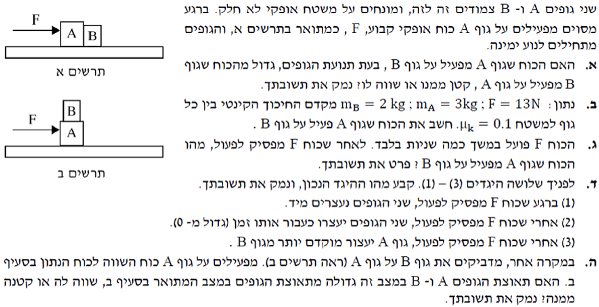

הכנת פתרון מוסבר לתלמידים - צעד אחר צעד

על פי החוק השלישי של ניוטון (חוק פעולה ותגובה), כאשר גוף מפעיל כוח על גוף אחר, הגוף השני מפעיל עליו כוח שווה בגודלו ומנוגד בכיוונו. חוק זה מתקיים תמיד, גם כשהגופים בתאוצה.
לכן, הכוח שגוף A מפעיל על B שווה בגודלו לכוח שגוף B מפעיל על A.
1. חישוב כוח החיכוך הקינטי של כל גוף (בציר y מתקיים \(N=mg\)):
2. נרשום את משוואות הכוחות (החוק השני של ניוטון) בציר x לכל גוף בנפרד:
מסעיף א' אנו יודעים שגודל כוחות הפעולה והתגובה שווה (\(F_{AB} = F_{BA}\)). נחבר את שתי המשוואות, וכך נראה כיצד הכוחות הפנימיים מבטלים זה את זה:
3. כעת, נציב את התאוצה שמצאנו חזרה במשוואה של גוף B כדי לחשב את \(F_{AB}\):
תשובה: גודל הכוח הוא 5.2 ניוטון.
כדי להוכיח זאת בצורה מדויקת, לא נניח מראש שהכוח ביניהם מתאפס. נניח שעדיין קיים כוח מגע \(F_{AB}\) ושהגופים ממשיכים לנוע יחד באותה תאוצה (\(a\)).
נרשום את משוואות הכוחות מחדש (הפעם ללא הכוח הדוחף F):
נחבר את המשוואות כדי למצוא את תאוצת המערכת החדשה (נזכור ש- \(F_{AB} = F_{BA}\)):
כעת, נציב את התאוצה שמצאנו חזרה במשוואה של גוף B כדי לחלץ את \(F_{AB}\):
מסקנה: המתמטיקה מוכיחה שהכוח ביניהם מתאפס. מכיוון ששני הגופים מאטים באופן טבעי באותו הקצב בדיוק (תאוצתם השלילית שווה), הם אינם לוחצים יותר זה על זה.
ברגע עזיבת הכוח, לשני הגופים יש מהירות התחלתית זהה (כי הם נעו יחד). מסעיף ג' הוכחנו שגם התאוצה השלילית שלהם זהה (\(-1 \text{ m/s}^2\)).
לפי הנוסחה הקינמטית \(v = v_0 + at\), הזמן לעצירה הוא \(t = -v_0/a\). מכיוון שהמהירות והתאוצה שוות, הזמן לעצירה שווה.
לכן, היגד (2) הוא הנכון: שניהם יעצרו כעבור אותו זמן.
נוכיח זאת מתמטית בעזרת החוק השני של ניוטון עבור המערכת כולה (A+B):
1. נחשב את המסה הכוללת של המערכת החדשה:
2. נחשב את הכוח הנורמלי הכולל ואת כוח החיכוך הקינטי של המערכת מול הרצפה (בציר y מתקיים \(N_{tot}=m_{tot}g\)):
3. נציב בחוק השני של ניוטון את המשוואה בציר x:
מסקנה: קיבלנו בדיוק את אותה משוואה ואת אותה תוצאה כפי שקיבלנו בסעיף ב'. לכן, תאוצת המערכת שווה לתאוצה שבסעיף ב' (\(1.6 \text{ m/s}^2\)).